首选：斯德哥尔摩公交网络
2023 · Team 13904 · PDF p.11

灰色海岸与行政边界作底，线路和站点着色，右下角放大中心区。适合本题展示学校、公共设施与交通可达性。
原始论文全库：68篇论文、998个候选图页。全部做可复现分类检索；精选参考做视觉蒸馏。19个精选参考页面已逐页查看。
地图跟13904队的浅灰真实底图、彩色数据层与局部放大；全球定位参考13719队；框架参考14995队；统计线图参考13719队。统一编码含义，不强行把所有图套成一种构图。
参考：13719 / 2023 / PDF p.7；16738 / 2025 / PDF p.9

参考：13904 / 2023 / PDF pp.11、20–22；16742 / 2025 / PDF p.12
参考：13904 / 2023 / PDF p.21；16742 / 2025 / PDF p.12

参考：14995 / 2024 / PDF p.4，Figure 1
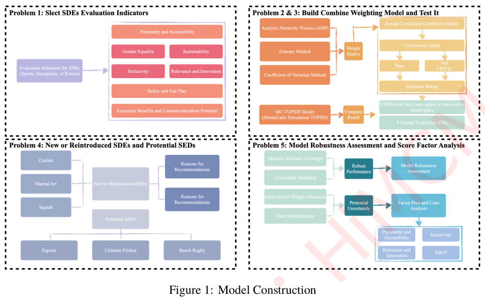
参考：14632 / 2023 / PDF p.8，Figure 4
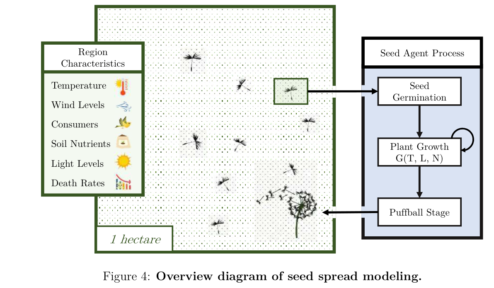
参考：13719 / 2023 / PDF p.22；15504 / 2024 / PDF p.18；16739 / 2025 / PDF p.9
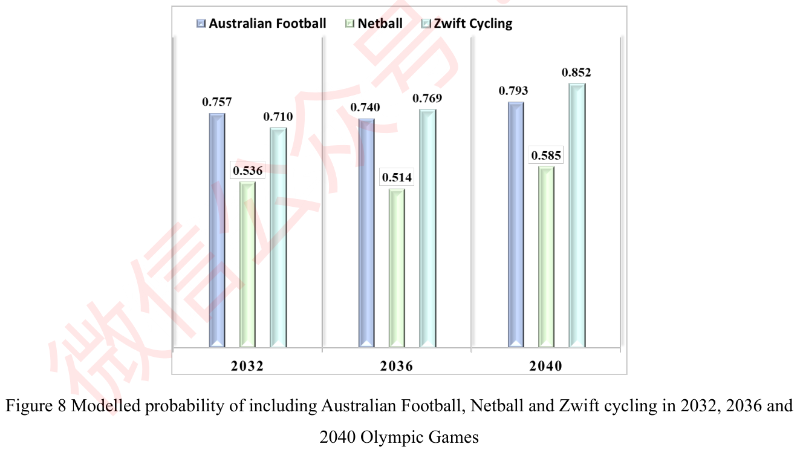
参考：13719 / 2023 / PDF p.16；14632 / 2023 / PDF p.8
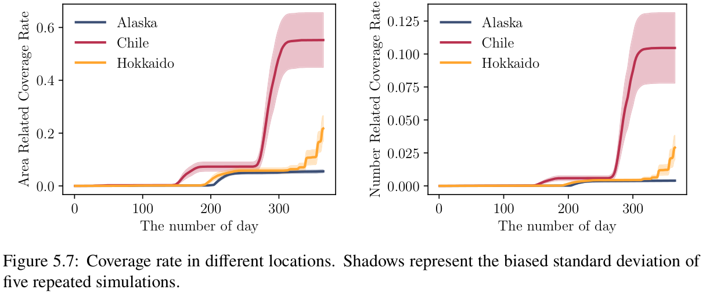
参考：16739 / 2025 / PDF p.9；13719 / 2023 / PDF p.16
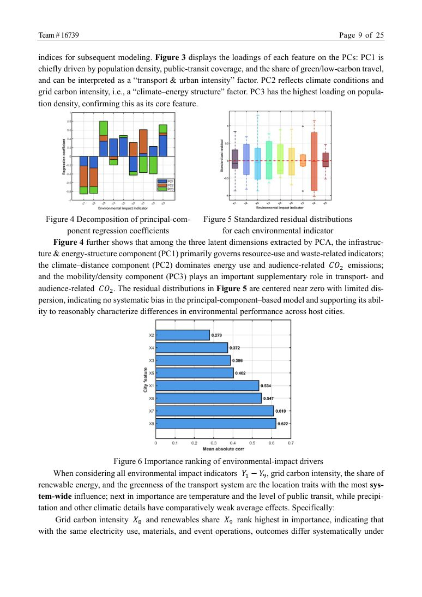
参考：16739 / 2025 / PDF p.8，Figures 1–3
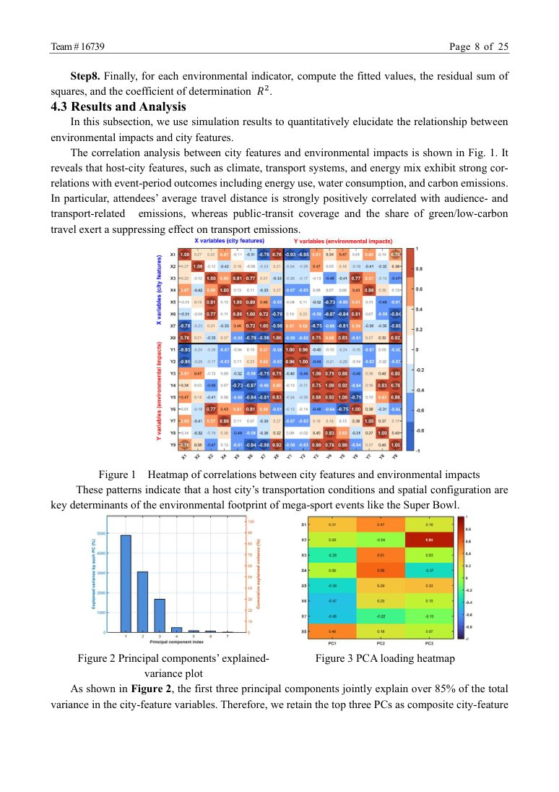
参考：13719 / 2023 / PDF p.16（视觉参照）；本题归档可行区间分析
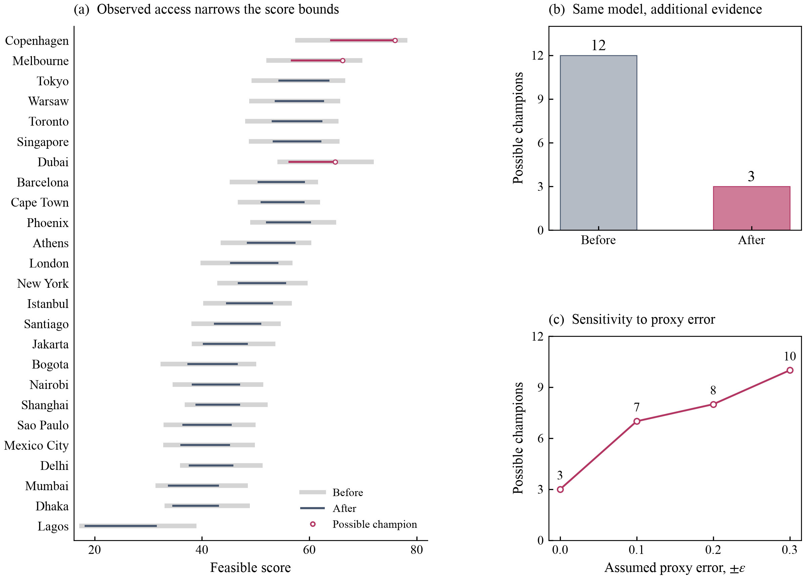
参考：13719 / 2023 / PDF pp.15–16、22；16742 / 2025 / PDF p.12
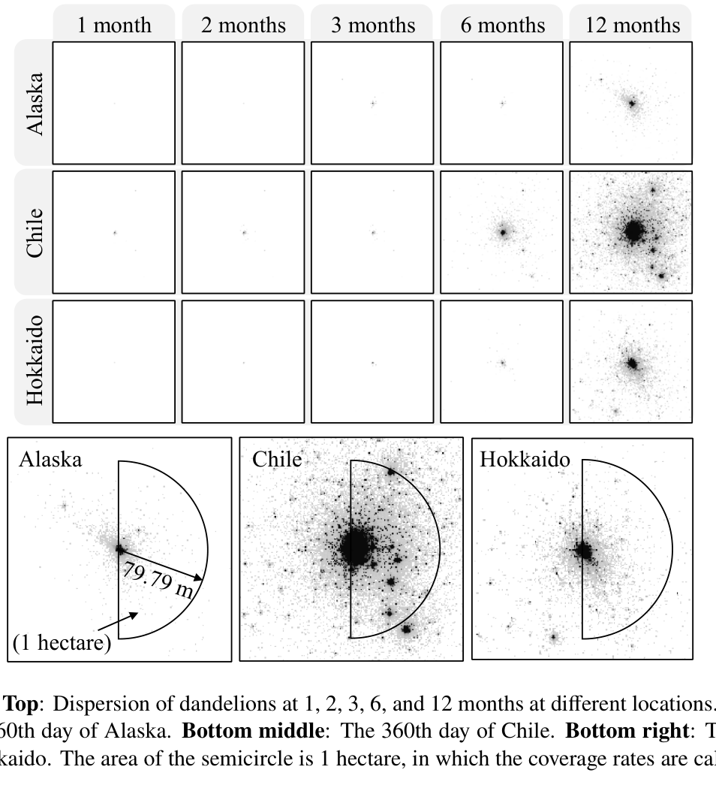
参考：16738 / 2025 / PDF p.20；13719 / 2023 / PDF p.16
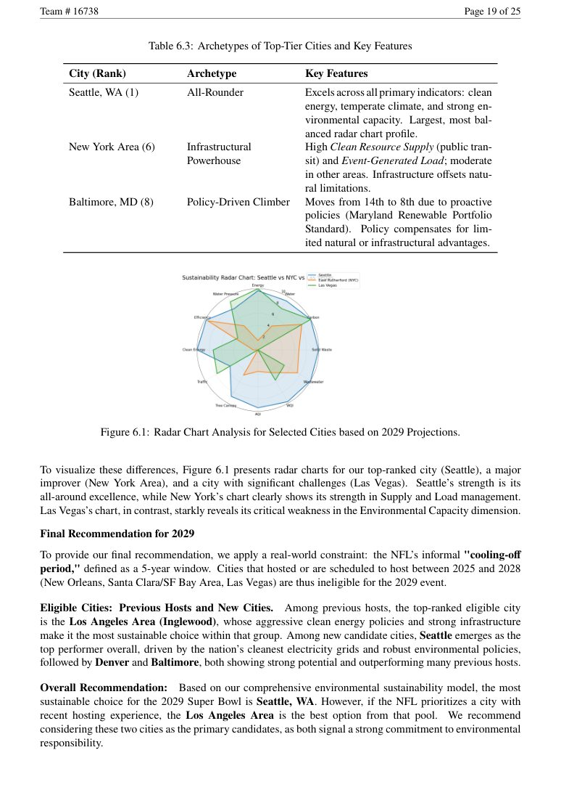
全球图使用Natural Earth；城市底图使用OpenStreetMap公开矢量道路／河流与Natural Earth海岸线、湖泊。颜色是Learning类邻近20处POI的平均模型步行分钟，不是最近高中或实测通学。地图位置来自已有city_index中的作者都市区域参考点。
CARTO尝试返回的是API KEY REQUIRED占位图，已拒绝使用；不将HTTP成功当作真实底图证据。底图道路仅作地理参照，没有重新计算可达性。
点击原文链接回到对应PDF页。以下是视觉参考，不是当前队伍的数据或结果。
2023 · Team 13904 · PDF p.11
灰色海岸与行政边界作底，线路和站点着色，右下角放大中心区。适合本题展示学校、公共设施与交通可达性。
原始论文2023 · Team 13904 · PDF p.21

两张图保持地理范围与底图一致，颜色表达线路状态；适合修订前后或不同通学阈值的覆盖对照。
原始论文2025 · Team 16742 · PDF p.12
相同底图、城市点位与共用色标。适合25城指标的空间分布。原图文字较小，本题应扩大面板、减少底图地名。
原始论文2025 · Team 16738 · PDF p.9

浅色底图与单一绿色色标，城市位置清楚。适合城市分布或单一指标的空间概览。
原始论文2023 · Team 13719 · PDF p.7
世界底图标出研究点。适合候选城市总览；底图色彩和地名较密，正式重绘宜降低饱和度。
原始论文2025 · Team 16738 · PDF p.8

真实道路、河流与路况着色；可参考道路细节，但不直接把原截图当成本题新数据。
原始论文2023 · Team 14076 · PDF p.14

用类别色标区分气候区，含地点、指北针和比例尺。适合解释城市环境背景，不宜照搬过多高饱和色。
原始论文2023 · Team 13904 · PDF p.20

规则道路网配浅灰底图，局部放大显示细节。适合城市级出行或设施服务范围对比。
原始论文2024 · Team 14995 · PDF p.4
四个虚线分区；每区一种功能色；内部大小框有层级，箭头只表达依赖。 新版01保留四分区与分支结构，使用真正的研究步骤和公式。缩短标签、加大字号、减少无用节点。
原始论文2023 · Team 13719 · PDF p.16
Times字形、细黑全边框、无背景网格；藏蓝／玫红／金黄明确区分三组。 新版03沿用字体、轴框和三色关系。由于没有重复实验误差，不能仿画原图阴影带。
原始论文2023 · Team 13719 · PDF p.15
统一面板边框和排列，空间细节本身构成视觉重点，尺度写清楚。 新版02用三个真实城市的六边形网格，统一色标、独立比例尺；没有捏造底图或地标。
原始论文2023 · Team 13719 · PDF p.22
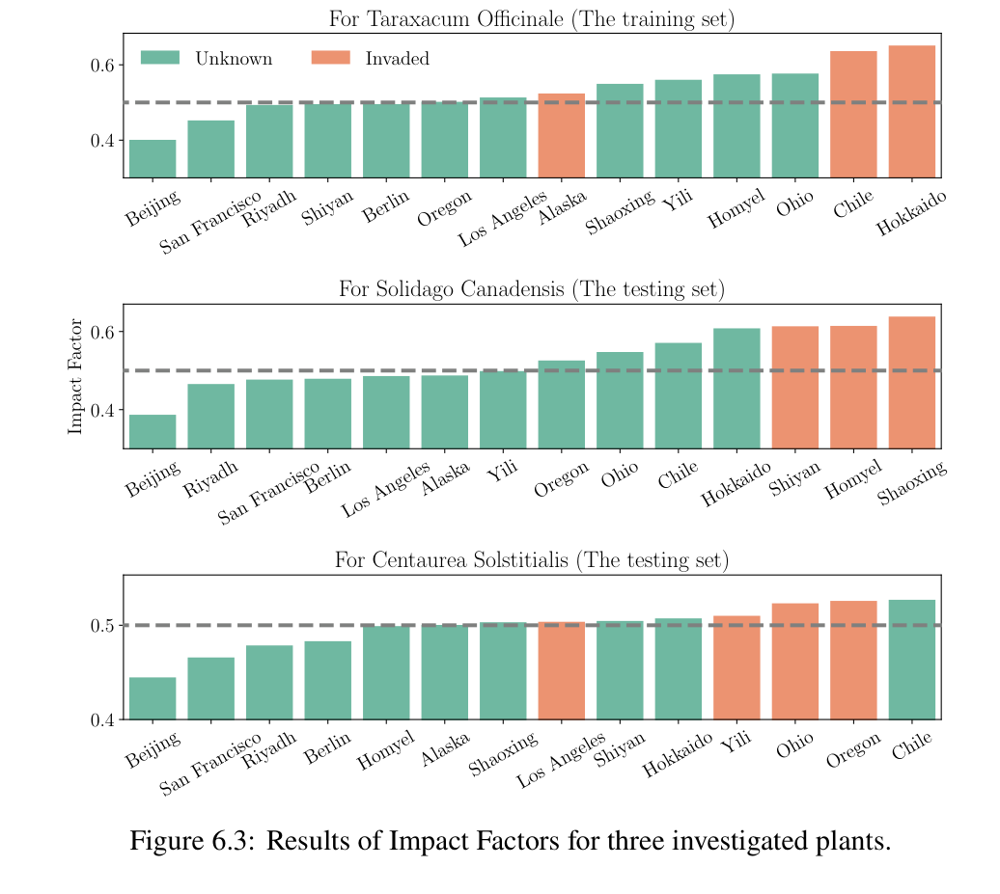
排序形成阅读顺序，颜色编码类别，图形紧凑，说明放在图下。 新版04保留全部25城，条形后直接给分数，并列展示三阶段排名；去掉装饰性大标题。
原始论文2024 · Team 15504 · PDF p.18
每组重复同样的颜色次序；柱顶数值让读者不用猜。 新版03b沿用组内顺序和直接标数，采用蓝灰、浅绿、青灰，去掉原图立体高光。
原始论文2023 · Team 14632 · PDF p.8
输入、空间对象和演化过程连成关系；图形承担解释任务。 新版01第三分区直接画居民网格、效用映射、均值与低尾的汇合；不复用蒲公英插图。
原始论文2025 · Team 16739 · PDF p.9
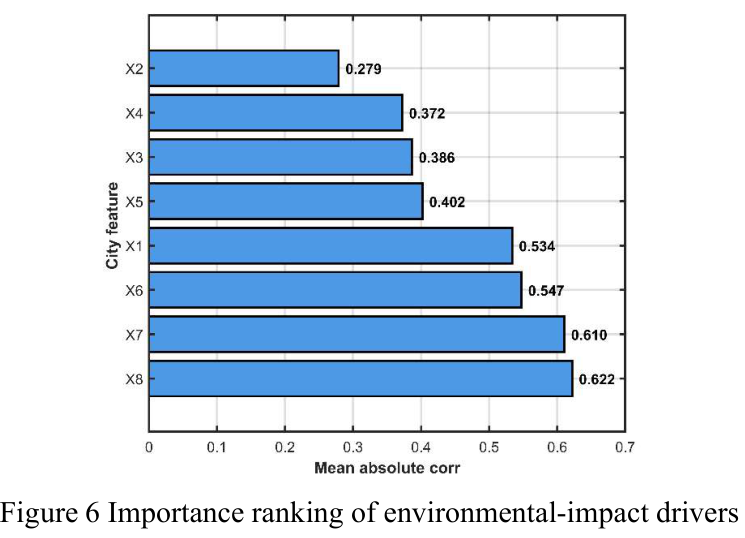
横向标签易读，条尾给数值，轴刻度明确。 新版04沿用横向条形和数值，但减少网格、将颜色留给三个机制案例。
原始论文2023 · Team 14632 · PDF p.8
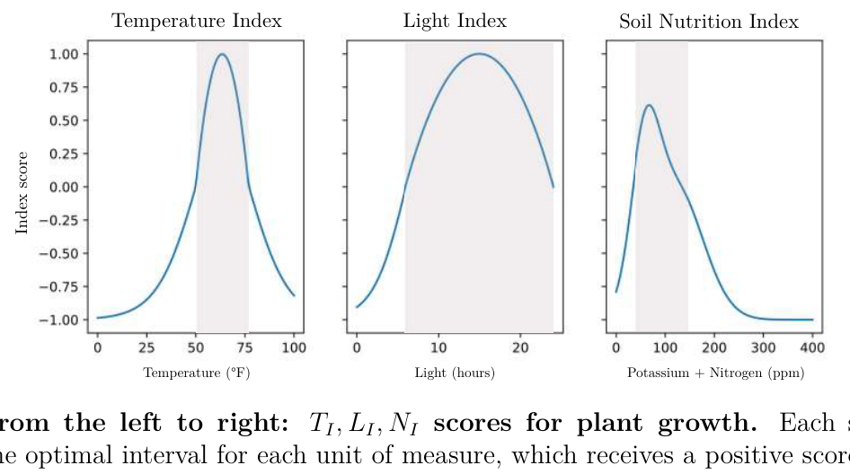
同一坐标结构重复三次；浅色带只标有数学含义的区间。 新版03采用同高三面板。没有适用区间证据时不增加背景阴影。
原始论文2025 · Team 16739 · PDF p.8
相关矩阵与指标分数矩阵要使用不同的色标逻辑；原文的正负相关可以使用以零为中心的双色标。
原始论文2025 · Team 16739 · PDF p.9
原图将残差、系数与排序并排。箱体和须必须有真实分布支持，不能把单个城市分数伪装成分布。
原始论文2025 · Team 16738 · PDF p.20
少量城市叠加可看轮廓，但轴顺序和面积容易改变印象；本题25城不用一张雷达图堆叠。
原始论文参数规范、地图验收清单、图注模板与数据边界见 完整文档。原图许可不等于本题重绘底图许可；正式地图应从独立来源取得并正确署名。